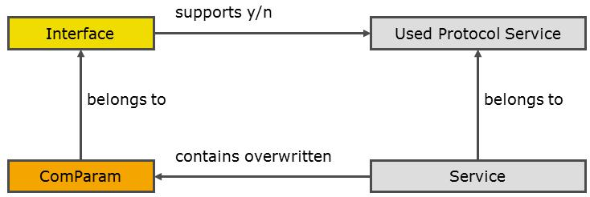

See the procedure How to Specify Communication Parameters at Services and Jobs.
As a default, a communication parameter is defined once for an ECU document, in the "Interfaces" section.
CANdelaStudio allows to overwrite communication parameters locally at Services or Jobs.
[LCP-R100] The communication parameter list of an interface allows the enabling of "local" values for a communication parameter in the property dialog [CPUI-R210].
The dialog creates the necessary default attribute(s) to store the values at a service or job.

Used ProtocolServices and Interfaces
[LCP-R200] A communication parameter can only be edited at a service in a diagnostic instance if its Used Protocol Service (i.e. the Protocol Service as used in a diagnostic class) is supported [SSI-R100] for the interface of the communication parameter.
Local communication parameters for a service in a diagnostic instance are edited in the Service property dialog, the values are stored in the attributes enabled as described in the previous chapter.
The same holds for jobs.